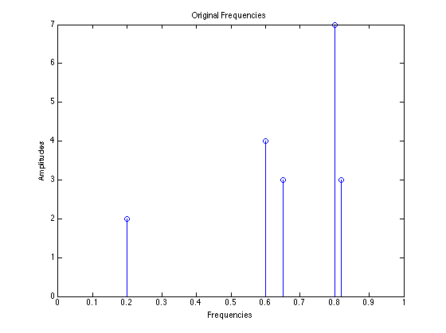
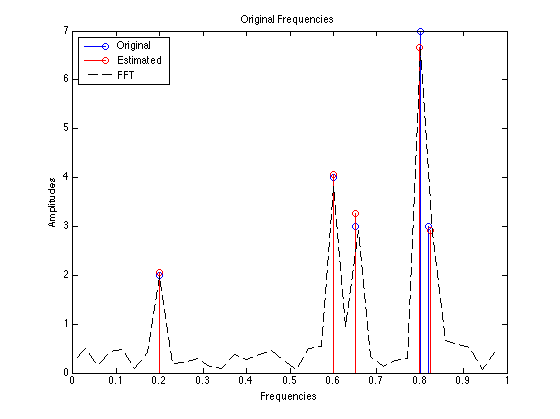

Atomic Line Spectral Estimation Demo
The Atomic Line Spectral Estimation Toolbox is a suite of MATLAB functions for frequency estimation of noisy line spectral signals with AST (Atomic Soft Thresholding) as described in the paper
Badri Narayan Bhaskar, Gongguo Tang, Benjamin Recht "Atomic Norm Denoising for Line Spectral Estimation" (2013), preprint available at http://arxiv.org/abs/1204.0562
This demo provides a walkthrough of the toolbox functions and options.
Contents
Generating Line Spectral Signals
In this example, we collect 100 equispaced signals with 5 frequencies in [0,1]
n = 35; k = 5;
The function linespectrum is a convenience function to generate samples of a line spectral signal.
[signal,amps,freqs] = linespectrum(n, k, ... 'frequencies',[0.2, 0.6, 0.65, 0.8, 0.82],... 'amplitudes',[-2 4 3 7 3]);
We add noise so that the average signal to noise ratio is 15 dB
SNR = 15; noise_std = norm(signal)/sqrt(n)*10^(-SNR/20); observed = signal + noise_std*(randn(n,1) + 1i*randn(n,1))/sqrt(2);
Let us plot the line spectral signal
stem(freqs,abs(amps)); axis([0 1 -inf inf]); title('Original Frequencies'); xlabel('Frequencies'); ylabel('Amplitudes');
Use AST to denoise the signal and get frequencies and amplitudes
Now, the frequencies and amplitudes can be recovered using ast_denoise function.
tic;out = ast_denoise(observed);
fprintf('Finished in %g s.\n',toc);
Finished in 0.518581 s.
Plot the Estimated Signal
Now we will plot the estimated signal along with FFT
hold on; stem(out.freqs,abs(out.amps),'r'); % Plot the FFT F = fft(observed); N = length(F); plot(0:1/N:(N-1)/N,abs(F)/N,'k--'); hold off; legend('Original','Estimated','FFT','Location','NorthWest');
Performance Evaluation
We report the mean squared error improvement.
mse = @(estimate) norm(signal(:)-estimate(:))/norm(signal); fprintf('Received MSE = %.4f\n',mse(observed)); fprintf('AST MSE = %.4f\n',mse(out.debiased));
Received MSE = 0.1840 AST MSE = 0.0930
We can also compare frequency estimation performance using the metrics described in
Gongguo Tang, Badri Narayan Bhaskar, Benjamin Recht "Near Minimax Line Spectral Estimation" (2013). Preprint available at http://arxiv.org/abs/1303.4348
fprintf('m1 = %.4g\n', m1func(out.amps,out.freqs,amps,freqs,n)); fprintf('m2 = %.4g\n', m2func(out.amps,out.freqs,amps,freqs,n)); fprintf('m3 = %.4g\n', m3func(out.amps,out.freqs,amps,freqs,n));
m1 = 0 m2 = 6.866e-05 m3 = 1.731